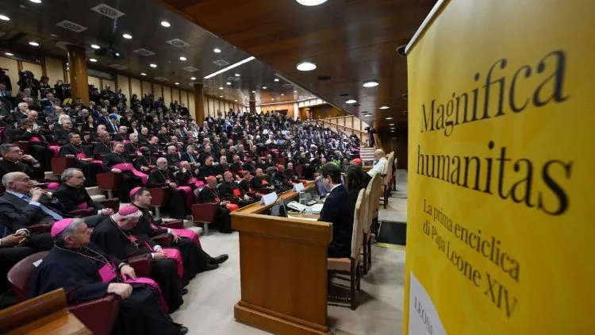
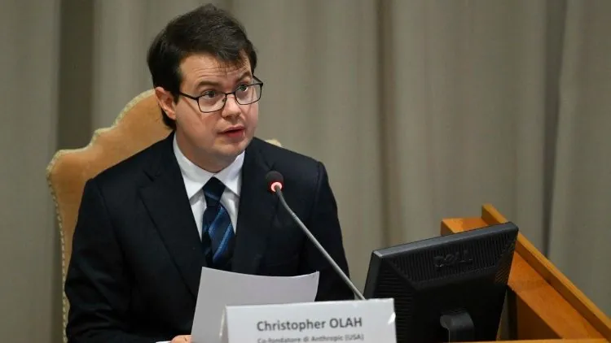

NewsLetter #42
Magnifica Humanitas e la Professione dell'AI Officer nella PA
SPECIALE AI & ETICA | Maggio 2026 "Il documento offre un lessico alternativo a quello tecnico-amministrativo per nominare problemi che esistono già nella pratica quotidiana ma che faticano a emergere.
ChatGPT: Magnifica Humanitas in PA
Prefazione: quando il costruttore chiede alla Chiesa di dire «no»
Il 25 maggio 2026, nella Sala del Sinodo in Vaticano, Leone XIV ha presieduto in prima persona la presentazione della propria enciclica Magnifica Humanitas. Nessun pontefice aveva mai presieduto alla presentazione di un proprio documento magisteriale. Questo dettaglio porta un segnale preciso: quanto il tema fosse considerato urgente da chi lo firmava. Per i non credenti - come il sottoscritto - un testo incredibilmente preciso sul tema delle responsabilità etiche e per cui umane di fronte a questa tecnologia.
Tra i relatori scelti per l’occasione figurava Christopher Olah, co-fondatore di Anthropic, una delle società di intelligenza artificiale più avanzate al mondo e tra quelle con il profilo più esplicito sul tema della sicurezza dei sistemi. Olah guida il team di ricerca sulla interpretability, ovvero lo studio di ciò che accade realmente all’interno dei modelli durante il loro funzionamento. La sua presenza al Vaticano portava il peso di una scelta deliberata: Leone XIV aveva deciso di mettere al tavolo, accanto ai vertici della Curia, uno dei ricercatori che lavora quotidianamente sull’interno di questi sistemi.
L’intervento di Olah, pubblicato integralmente sul sito di Anthropic, ha aperto con una premessa che difficilmente ci si aspetta dal co-fondatore di un’azienda tecnologica: «Ogni laboratorio di IA di frontiera, incluso Anthropic, opera all’interno di incentivi e vincoli che possono a volte entrare in conflitto con il fare la cosa giusta. La pressione a restare commercialmente vitali, a restare alla frontiera della ricerca. La pressione geopolitica. E le più antiche e semplici pressioni dell’orgoglio e dell’ambizione. Per quanto sinceramente ciascuno di noi intenda fare la cosa giusta, saremo sempre influenzati da quegli incentivi.» Per questo, ha proseguito, è «enormemente importante che ci siano persone al di fuori di quegli incentivi, persone disposte a dire cose difficili, a essere i nostri critici onesti e riflessivi». È in questo ruolo che Olah ha collocato esplicitamente la Chiesa e il documento che stava per essere presentato.
La parte del suo intervento destinata a rimanere nel dibattito pubblico riguarda la natura stessa dei sistemi che Anthropic costruisce. Olah ha dichiarato, davanti al Pontefice e ai rappresentanti delle Chiese di tutto il mondo: «Continuiamo a trovare cose misteriose, perfino inquietanti. Troviamo strutture che specchiano i risultati delle neuroscienze umane. Troviamo prove di introspezione. Troviamo stati interni che da una prospettiva funzionale specchiano gioia, soddisfazione, paura, dolore e disagio. Non so cosa significhi, ma penso che meriti un discernimento continuo.»
Questa dichiarazione, proveniente dal ricercatore che studia l’interno dei modelli, introduce una variabile che il dibattito tecnico-amministrativo sull’IA tende a escludere per definizione: l’incertezza radicale su cosa siano effettivamente questi sistemi. Per un AI Officer nella PA, questo è il contesto operativo concreto: si manifesta ogni volta che si adotta un sistema che produce testi, valutazioni, classificazioni, o interagisce con i cittadini.
C’è infine una dimensione geopolitica che la presenza di Olah ha reso visibile, forse non del tutto involontariamente. Anthropic è un’azienda statunitense, finanziata da capitali aUSA, operante nel cuore del complesso tecnologico-industriale nord-americano. La stessa enciclica che Olah elogiava dal Vaticano dedicava passaggi espliciti alla concentrazione dello sviluppo dell’IA in pochi paesi ricchi e al rischio di un colonialismo digitale che priva le comunità meno dotate di risorse della capacità di governare le proprie infrastrutture di dati e di comunicazione. Questa tensione, tra la sincerità dell’appello di Olah e la struttura di potere in cui la sua azienda opera, è precisamente il tipo di frizione che un esercizio etico serio non può eludere; l’enciclica stessa, pur accogliendo il dialogo, non la risolve con una semplice stretta di mano.
L’analisi che segue lavora su queste tensioni, usando il testo dell’enciclica come unica fonte e le dichiarazioni di Olah come specchio che ne amplifica la portata pratica per chi lavora nella comunicazione e nella governance dell’IA pubblica.
1. La non-neutralità morale dell’IA: un cambio di paradigma per la PA
Il paragrafo 104 dell’enciclica enuncia con chiarezza una posizione che la cultura tecnica della PA tende a evitare: «non possiamo considerare l’IA moralmente neutra». Questa affermazione ha il peso di un vincolo epistemologico. Ogni sistema algoritmico adottato da un ente pubblico incorpora scelte valoriali compiute da chi lo ha progettato, scelte che si trasferiscono nelle decisioni amministrative senza che l’amministrazione ne abbia piena consapevolezza né responsabilità dichiarata.
Le parole di Olah al Vaticano aggiungono a questo principio una dimensione ulteriore: i sistemi incorporano le scelte valoriali dei progettisti e sviluppano strutture interne che gli stessi progettisti non comprendono completamente. Se chi costruisce questi modelli ammette di trovare «cose misteriose, perfino inquietanti», la PA che li adotta senza un processo rigoroso di valutazione sta assumendo una responsabilità etica su un oggetto la cui natura è, per ammissione dei suoi costruttori, ancora aperta.
«Un’informazione veritiera non nasce da un controllo centralizzato o automatizzato. Nel discorso pubblico, la verità dei fatti possiede una dimensione razionale, poiché richiede verifica, riscontro delle fonti e responsabilità argomentativa; ma è ancor più relazionale: si costruisce attraverso legami di fiducia e pratiche condivise, in un confronto onesto con gli altri e con il mondo.»
(Magnifica Humanitas, par. 132)
Per un AI Officer, questo significa che l’adozione di un sistema di intelligenza artificiale richiede un processo di valutazione che includa l’analisi dei valori incorporati nel sistema, dei dati su cui è stato addestrato, delle categorie che utilizza per classificare persone e situazioni. Una procedura automatizzata per l’assegnazione di contributi sociali, per il calcolo di punteggi di rischio nelle pratiche di ordine pubblico, o per la selezione di candidati in un concorso pubblico riflette sempre definizioni di merito, di rischio, di priorità: scelte politiche travestite da calcolo matematico.
Il primo punto di frizione pratica è dunque questo: la PA è abituata a delegare la responsabilità valoriale al legislatore e la responsabilità tecnica al fornitore. L’enciclica, nel negare la neutralità morale dell’IA, chiede all’AI Officer di assumere entrambe le responsabilità o, quanto meno, di renderle esplicite e sottoporle a scrutinio democratico.
2. Il paradigma tecnocratico dentro la macchina pubblica
Leone XIV riprende e approfondisce il concetto di paradigma tecnocratico già presente in Laudato si’, applicandolo ora al dominio digitale (par. 92-97). Il paradigma tecnocratico è la tendenza a valutare ogni problema esclusivamente in termini di efficienza, produttività e ottimizzazione quantitativa, escludendo dalla considerazione tutto ciò che resiste alla misurazione. Nella PA, questo paradigma si manifesta nel primato delle metriche di performance (tempi di lavorazione, costi per pratica, tasso di automazione) sui criteri di giustizia sostanziale, equità nell’accesso ai servizi, rispetto della dignità degli utenti.
Olah ha nominato esplicitamente questa struttura dal lato dei costruttori: la pressione commerciale, la corsa alla frontiera della ricerca, le ambizioni geopolitiche sono incentivi che spingono nella stessa direzione del paradigma tecnocratico, dall’esterno dell’istituzione pubblica. Quando la PA acquista sistemi prodotti in quel contesto, incorpora anche quella logica di ottimizzazione, spesso senza averne consapevolezza.
Un AI Officer che lavori in un contesto dominato da questa logica si troverà a dover giustificare con cifre e indicatori ciò che ha valore in sé: la garanzia che nessun cittadino venga escluso da un beneficio per effetto di un errore algoritmico non correggibile; il tempo umano dedicato a una pratica complessa che un sistema automatizzato gestirebbe in modo statisticamente corretto ma concretamente ingiusto nel singolo caso. Il documento papale invita a resistere a questa riduzione, il che nella pratica istituzionale si traduce in un compito preciso: rendere visibili e negoziabili i criteri di ottimizzazione dei sistemi adottati, e mantenere percorsi alternativi non automatizzati per chi ne abbia necessità.

La presentazione nell’Aula del Sinodo il 25 maggio 2026 (Liberamente ripresa da
3. Accountability algoritmica e il diritto alla spiegazione
Il paragrafo 105 affronta il tema dell’accountability con un linguaggio che si sovrappone quasi perfettamente al dibattito giuridico-amministrativo sull’explainability dei sistemi AI. L’enciclica chiede che le decisioni che incidono sulla vita delle persone siano spiegabili, contestabili, sottoposte a revisione umana. Questo corrisponde, nella sostanza, al principio di human in the loop tradotto in termini di dottrina sociale.
Nella PA italiana, la questione è urgente perché il sistema normativo vigente (L. 241/1990 sul procedimento amministrativo, poi integrata da successive pronunce del TAR e del Consiglio di Stato sulla motivazione degli atti automatizzati) richiede che ogni provvedimento, incluso quello prodotto da un algoritmo, sia motivato e impugnabile. Eppure nella pratica si registra una dissociazione: i sistemi vengono adottati con la garanzia formale dell’impugnabilità, ma il cittadino che volesse contestare una decisione algoritmicamente prodotta non dispone degli strumenti tecnici per farlo in modo effettivo, e spesso neppure l’ufficio responsabile è in grado di spiegare il funzionamento del sistema con sufficiente granularità.
L’AI Officer è chiamato a chiudere questa dissociazione. Il punto di frizione pratica si manifesta nel momento in cui il fornitore tecnologico invoca la riservatezza del codice proprietario (black box) come limite alla trasparenza. Il documento di Leone XIV, nel richiamare il diritto alla spiegazione come esigenza di dignità umana, non lascia spazio a questa deroga quando si tratti di decisioni che incidono su diritti fondamentali. Tradotto in obbligo operativo: nei capitolati di gara per sistemi AI in PA, la spiegabilità delle decisioni deve figurare come criterio eliminatorio.
«Il controllo non passa solo da divieti espliciti, ma dall’architettura della visibilità: ciò che viene amplificato o reso invisibile, ciò che è premiato o penalizzato, finisce per modellare opinioni e scelte, generando conformismo e autocensura.»
(Magnifica Humanitas, par. 171)
4. I dati come bene collettivo: tensione con il modello di mercato della GovTech
Il paragrafo 108 è tra i più densi dell’enciclica sul piano delle implicazioni pratiche per la PA. Riprendendo la tradizione della dottrina sociale iniziata con Giovanni Paolo II, Leone XIV afferma che i dati, in quanto «frutto del contributo di molti», non possono essere appropriati da soggetti privati senza che la collettività mantenga diritti sostanziali su di essi. Questa posizione entra in frizione diretta con il modello di business prevalente nella GovTech italiana, dove le amministrazioni cedono o condividono dataset di grande valore (dati sanitari, dati fiscali, pattern di mobilità urbana, comportamenti di servizio) in cambio di soluzioni tecnologiche a basso costo apparente.
Per un AI Officer, questo paragrafo dell’enciclica costituisce un’autorità morale che si aggiunge al quadro normativo già vigente (GDPR, Codice del Consumo, normativa AgID sulla condivisione dei dati pubblici) per sostenere una posizione di grande rigore nelle negoziazioni con i fornitori tecnologici. I dati dei cittadini gestiti dalla PA costituiscono un bene comune detenuto in custodia dall’istituzione, con obblighi radicalmente diversi da quelli di un asset commerciale da valorizzare sul mercato; la loro cessione o utilizzo secondario richiede una legittimazione democratica che i contratti commerciali non possono sostituire.
Il paragrafo 110, con il richiamo a «disarmare l’IA» rimuovendola dalla logica del monopolio, radicalizza ulteriormente questa posizione: l’AI Officer deve anche interrogarsi sulla struttura di dipendenza tecnologica che si crea quando un’amministrazione affida funzioni critiche a un unico operatore privato senza strategie di uscita praticabili, al di là della negoziazione dei singoli contratti.
5. Sussidiarietà digitale: chi è il «livello superiore» nell’ecosistema tecnologico?
Il paragrafo 71 compie un’operazione teorica di grande rilevanza pratica: nell’era digitale, osserva l’enciclica, il «livello superiore» a cui si rivolgeva il principio di sussidiarietà ha mutato natura. Sono i grandi attori economici e tecnologici privati a esercitare quelle funzioni, controllando infrastrutture digitali, piattaforme di distribuzione e standard tecnici. Questo ribaltamento ha conseguenze dirette per la governance pubblica dell’IA.
Se la sussidiarietà prescriveva che il livello superiore intervenisse solo quando quello inferiore non fosse in grado di provvedere, applicata all’ecosistema digitale attuale suggerisce che le grandi piattaforme tecnologiche esercitano di fatto funzioni quasi-pubbliche senza la corrispondente responsabilità democratica. Per un AI Officer nella PA, questa riflessione si traduce in una domanda operativa concreta: quando l’amministrazione utilizza servizi cloud, modelli linguistici, sistemi di riconoscimento o classificazione forniti da operatori privati dominanti, sta delegando funzioni pubbliche a soggetti privi di legittimazione democratica? E quali meccanismi di controllo, audit e portabilità garantiscono che questa delega resti reversibile?
La tensione pratica è tra la convenienza economica e operativa dell’adozione di piattaforme mature (e spesso straniere) e l’obbligo politico di preservare la sovranità tecnologica dell’istituzione pubblica, che l’enciclica inquadra come condizione di possibilità per la giustizia algoritmica, con argomenti che trascendono qualsiasi preferenza nazionalista.
6. Comunicazione pubblica: verità, cultura e architettura della visibilità
La sezione dell’enciclica dedicata alla comunicazione pubblica (par. 131-138) è la più ricca di implicazioni per chi opera nella PA con strumenti algoritmici, anche perché va oltre la questione della disinformazione, che è il piano su cui il dibattito tecnologico si sofferma di solito. Leone XIV costruisce un’argomentazione a più livelli che merita di essere scomposta, perché ciascun livello produce obblighi operativi distinti per un AI Officer. Per i comunicatori che si avvicinano all’IA, questa sezione dell’enciclica offre una cornice concettuale che nessun manuale tecnico fornisce: non descrive cosa fare con gli strumenti, ma chiede cosa si stia costruendo attraverso di loro.
6.1 La verità come fatto relazionale: fiducia e pratiche condivise
Il paragrafo 132 introduce una distinzione che il linguaggio tecnico-amministrativo tende a ignorare: la verità nella comunicazione pubblica ha una dimensione razionale, che richiede «verifica, riscontro delle fonti e responsabilità argomentativa», ma è «ancor più relazionale: si costruisce attraverso legami di fiducia e pratiche condivise, in un confronto onesto con gli altri e con il mondo». Questa formulazione ha conseguenze precise per la progettazione dei sistemi di comunicazione istituzionale.
Un chatbot che risponde correttamente a una domanda su una pratica amministrativa soddisfa la dimensione razionale della verità (il dato fornito è esatto), ma lascia inevasa quella relazionale (vedi: Infocrazia saggio del filosofo sudcoreano Byung-Chul Han che descrive il passaggio dal regime disciplinare a una nuova forma di dominio ndr.). La fiducia istituzionale si costruisce attraverso relazioni che implicano riconoscimento, ascolto, responsabilità personale: qualità che i sistemi automatizzati non sono in grado di produrre strutturalmente. Quando la PA sostituisce interamente il contatto umano con interfacce algoritmiche, impoverisce il rapporto di fiducia con il cittadino anche qualora le informazioni trasmesse siano tecnicamente corrette.
Il paragrafo 134 porta questa riflessione al livello politico con la citazione di Hannah Arendt: i regimi totalitari si reggono su persone per cui «la distinzione tra fatto e finzione (cioè, la realtà dell’esperienza) e la distinzione tra vero e falso (cioè, i canoni del pensiero) non esistono più». L’enciclica connette questo rischio all’ecosistema digitale contemporaneo: quando il pragmatismo dell’«utile o efficace» sostituisce la ricerca della verità come criterio della comunicazione pubblica, la vita democratica si indebolisce. Per la PA, questo è un avvertimento diretto: ottimizzare la comunicazione istituzionale per la massima velocità di risposta, il massimo engagement o il minimo costo non equivale a comunicare democraticamente.
6.2 La comunicazione come creazione di cultura: il sistema automatizzato come agente culturale
Il paragrafo 135 enuncia un principio che la teoria della comunicazione conosce da decenni ma che nella pratica della PA viene quasi sempre ignorato: «la comunicazione non è solo trasmissione di informazioni, ma è creazione di una cultura» (sempre Byung-Chul Han ndr.). I contenuti che circolano negli ambienti digitali «influenzano il modo in cui le persone percepiscono il mondo e introducono nella coscienza comune immagini e racconti che orientano i desideri e influenzano le scelte quotidiane». L’enciclica aggiunge che questo non è un mondo separato dalla realtà: «non è un mondo parallelo o puramente virtuale, perché ciò che nasce in rete entra ormai a far parte della vita delle persone».
Applicato alla comunicazione istituzionale automatizzata, questo principio ha un corollario scomodo: ogni sistema che la PA utilizza per comunicare con i cittadini, dalla risposta automatica alle domande frequenti al comunicato redatto con strumenti generativi, al tono standardizzato delle notifiche digitali, partecipa alla costruzione dell’immaginario collettivo su cosa sia lo Stato, su come tratti i suoi cittadini, su quale linguaggio usi per descrivere i diritti e le procedure. Un sistema generativo addestrato prevalentemente su testi burocratici preesistenti riproduce e amplifica una cultura della comunicazione istituzionale che può essere riduttiva, escludente, o povera sul piano della dignità del destinatario.
L’AI Officer che progetta o supervisiona sistemi di comunicazione automatizzata in PA sta scegliendo un agente culturale. Questa responsabilità richiede che i criteri di valutazione del sistema includano la qualità e l’equità del linguaggio prodotto, a fianco della correttezza delle informazioni e della velocità di risposta.
6.3 L’architettura della visibilità: chi amplifica controlla l’immaginario
Il paragrafo 136 afferma che «chi controlla le piattaforme digitali e i mezzi di comunicazione possiede una notevole capacità di incidere sull’immaginario collettivo e di proporre come desiderabile una certa visione della realtà». Il paragrafo 171 specifica il meccanismo con una formulazione tecnicamente precisa: «il controllo non passa solo da divieti espliciti, ma dall’architettura della visibilità: ciò che viene amplificato o reso invisibile, ciò che è premiato o penalizzato, finisce per modellare opinioni e scelte, generando conformismo e autocensura».
L’«architettura della visibilità» agisce attraverso la struttura stessa dell’algoritmo, che decide cosa appare per primo nei risultati di ricerca, cosa ottiene risposta immediata e cosa finisce in attesa, quali comunicazioni istituzionali raggiungono quali cittadini, costruendo un ordine di priorità e di rilevanza che è implicitamente politico.
Per la PA, questa implicazione è diretta e pressante. Quando un Comune o un’Amministrazione centrale distribuisce comunicazioni ai cittadini attraverso piattaforme di terze parti, attraverso social network o motori di ricerca governati da logiche algoritmiche proprie, la visibilità di quelle comunicazioni dipende da criteri che l’istituzione non controlla e spesso non conosce. L’AI Officer deve rendere esplicita questa dipendenza e deve porre la domanda che l’enciclica implicitamente formula: è compatibile con la funzione pubblica della comunicazione istituzionale affidarne la distribuzione a sistemi la cui architettura di visibilità non è trasparente, non è soggetta a controllo democratico e non risponde alle stesse finalità di interesse generale che vincolano la PA?
Il par. 190 aggiunge una dimensione ulteriore che riguarda il dibattito pubblico in senso lato: le narrazioni mediatiche polarizzanti vengono «spesso amplificate da algoritmi che valorizzano lo scontro e la contrapposizione». Quando la comunicazione istituzionale si inserisce in questi ecosistemi senza una strategia consapevole, rischia di essere rimodellata dai loro incentivi, producendo messaggi che inseguono l’engagement invece di costruire comprensione.
6.4 Ecologia della comunicazione pubblica: obblighi regolativi e ruolo dell’AI Officer
Il paragrafo 137 introduce il concetto di «ecologia della comunicazione», che si declina su più versanti. Sul versante delle regole pubbliche, l’enciclica chiede di «stabilire norme che rendano più trasparenti le logiche con cui i contenuti vengono selezionati e amplificati e che tutelino i dati personali». Sul versante culturale, chiede il «rafforzamento dei corpi intermedi, un giornalismo serio e luoghi di confronto in cui contino l’argomentazione e la verifica più che la reazione immediata».
Per un AI Officer in PA, la traduzione operativa di questa ecologia si articola su tre obblighi distinti. Il primo è un obbligo di trasparenza sui sistemi: ogni strumento algoritmico che la PA utilizza per comunicare deve rendere visibile la logica con cui seleziona, filtra e distribuisce i contenuti; questo vale tanto per i sistemi interni quanto per i canali di distribuzione esterni. Il secondo è un obbligo di pluralismo dei canali: affidarsi esclusivamente a piattaforme private per la distribuzione delle comunicazioni istituzionali compromette l’autonomia della voce pubblica; l’AI Officer deve contribuire a mantenere canali propri, controllati dall’istituzione, come alternativa praticabile. Il terzo è un obbligo di qualità argomentativa: il par. 137 valorizza «l’argomentazione e la verifica» come criteri della comunicazione democratica; un sistema generativo che produce risposte statisticamente plausibili ma prive di rigorosa base fattuale, o che semplifica eccessivamente per adattarsi ai formati digitali dominanti, viola questo criterio anche quando non produce affermazioni false in senso stretto.
Il par. 171 precisa infine che la libertà nell’era digitale è «anche una questione pubblica, che domanda regole chiare, trasparenza, possibilità di ricorso e limiti proporzionati all’uso di tecnologie invasive». L’AI Officer che supervisiona la comunicazione istituzionale deve concepire la propria funzione come presidio della qualità democratica dello spazio comunicativo: l’efficienza e la correttezza dei messaggi sono condizioni necessarie, ma il perimetro di responsabilità è più ampio.
.

L’intervento di Christopher Olah (Liberamente presa da @Vatican Media)
7. Dignità del lavoro e responsabilità verso i dipendenti pubblici
I paragrafi 148-156 affrontano il tema della trasformazione del lavoro nella transizione digitale con una posizione che va oltre la generica preoccupazione per la disoccupazione tecnologica. L’enciclica afferma che il lavoro è dimensione costitutiva della dignità umana e che i processi di automazione che lo rendono superfluo o degradato producono danno antropologico prima ancora che economico.
Olah ha posto questo tema come primo dei tre nodi che la Chiesa deve aiutare il mondo a non ignorare: «C’è una reale possibilità che l’IA sostituisca il lavoro umano su scala molto ampia. Se ciò accadrà, sostenere chi sarà spostato sarà un imperativo morale di proporzioni storiche.» La coincidenza tra questa dichiarazione e il par. 151 dell’enciclica, che richiama la posizione di Giovanni Paolo II sulla disoccupazione come «male grave» e «vera calamità sociale», chiarisce che entrambi riconoscono come il costo umano della transizione non si distribuisca uniformemente e come le istituzioni pubbliche portino una responsabilità specifica nel governarla.
Per un AI Officer in una PA, questa prospettiva genera un obbligo etico verso i colleghi dipendenti pubblici i cui profili professionali sono interessati dall’automazione: dal back-office amministrativo alla protocollazione, dalla gestione documentale alle attività di sportello. La responsabilità dell’AI Officer abbraccia la definizione di percorsi di riqualificazione, la preservazione di funzioni significative per i lavoratori coinvolti; la negoziazione sindacale degli impatti organizzativi va avviata prima dell’introduzione dei sistemi.
Il par. 156 è esplicito: «ogni introduzione di automazione e di IA dovrebbe essere accompagnata da scelte verificabili di tutela dell’occupazione, di riqualificazione e di partecipazione dei lavoratori». L’automazione come strumento di riduzione del personale è eticamente diversa dall’automazione come strumento di liberazione del lavoro umano verso compiti più qualificati; e questa distinzione deve trovare riscontro nella documentazione di processo. Praticamente una rivendicazione di tipo sindacale.
8. Accesso universale ai servizi digitali e nuove disuguaglianze
Il paragrafo 80 enuncia il principio della destinazione universale dei beni anche nel dominio digitale, con conseguenze dirette sulla progettazione dei servizi pubblici automatizzati. Se un servizio comunale, regionale o statale diventa accessibile prevalentemente o esclusivamente attraverso canali digitali che richiedono competenze, dispositivi e connettività che una parte della popolazione non possiede, l’automazione produce esclusione; produce, nelle parole dell’enciclica, una nuova forma di disuguaglianza strutturale.
Per l’AI Officer, questo si traduce in un vincolo di progettazione: ogni sistema digitale introdotto in PA deve essere accompagnato da una valutazione di impatto sull’accessibilità che consideri la popolazione anziana, le persone con disabilità digitale, le fasce di reddito basso con accesso limitato a dispositivi e connettività. Questo è un fondamento della Comunicazione Pubblica. Il parametro di successo di un sistema di servizi pubblici automatizzati comprende la quota di aventi diritto che riesce effettivamente ad accedervi, accanto al numero di transazioni gestite; la distanza tra queste due misure è l’indicatore più preciso del fallimento etico del sistema.
9. Sorveglianza, controllo sociale e i limiti dell’IA in sicurezza pubblica
I paragrafi 171-179 toccano un tema su cui la PA italiana ha ancora un dibattito insufficientemente sviluppato: l’uso di sistemi di sorveglianza algoritmica per finalità di ordine pubblico. L’enciclica denuncia esplicitamente le «nuove forme di schiavitù digitale» prodotte dai sistemi di controllo pervasivo e il fenomeno del «colonialismo digitale dei dati», che si manifesta anche quando le istituzioni pubbliche raccolgono e trattano dati comportamentali dei cittadini a fini predittivi senza adeguata base di legittimità democratica.
Il par. 171 nomina con esattezza il meccanismo: quando «ogni gesto lascia tracce, spostamenti, acquisti, relazioni, preferenze, si crea un potere nuovo: quello di profilare, prevedere e orientare i comportamenti, spesso senza che le persone ne abbiano piena consapevolezza». Se questi dati vengono usati dalla PA per prendere decisioni che incidono su opportunità concrete, si rischia di ledere la libertà e discriminare i più vulnerabili. L’enciclica chiede «regole chiare, trasparenza, possibilità di ricorso e limiti proporzionati all’uso di tecnologie invasive».
Per un AI Officer che operi in contesti che includono sicurezza urbana, gestione dell’immigrazione, prevenzione della criminalità, questi paragrafi pongono domande concrete: i sistemi di riconoscimento facciale nello spazio pubblico sono compatibili con la dignità che l’enciclica pone come fondamento? I sistemi di scoring predittivo del rischio individuale sono eticamente sostenibili quando producono effetti discriminatori documentati sulle minoranze? L’AI Officer porta una responsabilità istituzionale nel segnalare quando l’uso di questi sistemi eccede i limiti che il quadro etico, oltre che giuridico, consente.
I paragrafi 197-200, dedicati ai sistemi d’arma autonomi, estendono questa riflessione al dominio della sicurezza militare, ma il principio che vi sottende, la necessità del controllo umano effettivo sulle decisioni che producono conseguenze irreversibili sulla vita delle persone, vale integralmente per qualsiasi sistema automatizzato che la PA utilizzi in contesti coercitivi.
10. Colonialismo digitale dei dati della PA e sovranità tecnologica
Il concetto di colonialismo digitale (par. 178) nomina una dinamica che nell’ecosistema pubblico italiano ha una declinazione specifica: la dipendenza strutturale da fornitori tecnologici extraeuropei per funzioni critiche dell’amministrazione. Si tratta di un problema di sovranità nel senso preciso che l’enciclica gli attribuisce: la capacità di una comunità di governare se stessa secondo i propri valori e le proprie scelte democratiche.
La presenza di Olah alla presentazione dell’enciclica rende questa sezione densa di implicazioni. Anthropic, come le altre società di frontiera nel settore, opera in un contesto geopolitico preciso: è un’azienda made in US, con investitori nord-americani, sottoposta alla giurisdizione statunitense, partecipe di un ecosistema tecnologico che è anche uno strumento di proiezione di influenza. L’enciclica al par. 178 osserva che il colonialismo digitale «si appropria dei dati, trasformando le vite personali in informazioni sfruttabili» e che «interi territori, soprattutto quelli con minore rilevanza geo-strategica, subiscono una forma di dipendenza digitale». Quando i dati prodotti dall’attività pubblica italiana vengono trattati su infrastrutture cloud soggette a ordinamenti giuridici di altri Stati, la sovranità digitale della PA è già compromessa sul piano strutturale.
L’AI Officer, in collaborazione con i responsabili della protezione dei dati, con i decisori politici e con le unità di sicurezza informatica, è chiamato a elaborare strategie che vadano oltre la conformità al GDPR e affrontino la questione più profonda della collocazione geopolitica delle infrastrutture tecnologiche pubbliche.
Nota conclusiva: l’esercizio etico come pratica istituzionale permanente
La Magnifica Humanitas si rivolge all’AI Officer al di là di qualsiasi appartenenza confessionale. Chiede qualcosa di più accessibile e più esigente insieme: che le scelte tecnologiche compiute nella PA siano sottoposte a un esame di coerenza con i valori fondamentali che legittimano l’azione pubblica, valori che il documento papale formula in termini teologici ma che corrispondono a principi condivisi da ogni tradizione laica e democratica che assuma la dignità umana come fondamento.
Il fatto che uno dei principali costruttori di sistemi di intelligenza artificiale abbia chiesto pubblicamente, dal Vaticano, che esistano «voci morali che gli incentivi non possano piegare» non risolve le tensioni che l’enciclica descrive; semmai le rende più visibili. Quella richiesta era rivolta a istituzioni capaci di dire cose scomode da una posizione di autorità indipendente dai meccanismi di mercato. La PA, nella sua funzione di garanzia del bene comune e di tutela dei diritti dei cittadini, è una di queste istituzioni. L’AI Officer che opera al suo interno porta la responsabilità di essere parte di quella voce.
L’utilità di questo esercizio è precisamente questa: il documento offre un lessico alternativo a quello tecnico-amministrativo per nominare problemi che esistono già nella pratica quotidiana ma che faticano a emergere nei processi decisionali istituzionali. Chiamare «paradigma tecnocratico» la pressione a ottimizzare senza considerare chi resta escluso; chiamare «bene comune» i dati che la PA tratta in nome della collettività; chiamare «architettura della visibilità» la logica delle piattaforme attraverso cui la comunicazione istituzionale viene distribuita; chiamare «dignità del lavoro» il rispetto dovuto ai dipendenti nel processo di automazione: questi sono strumenti concettuali che rendono più precisa, e più difendibile, la posizione di chi esercita responsabilità etica nell’intelligenza artificiale pubblica.
Fonti:
Leone XIV, Magnifica Humanitas, 15 maggio 2026
Vatican News – Gli esperti IA: Magnifica Humanitas una «voce morale» che nessun incentivo piegherà
Anthropic – Chris Olah’s remarks on Pope Leo XIV’s encyclical Magnifica Humanitas